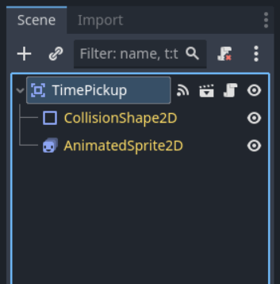
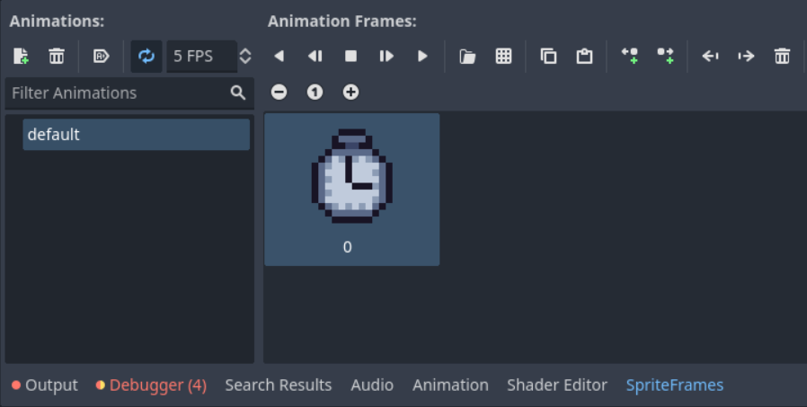
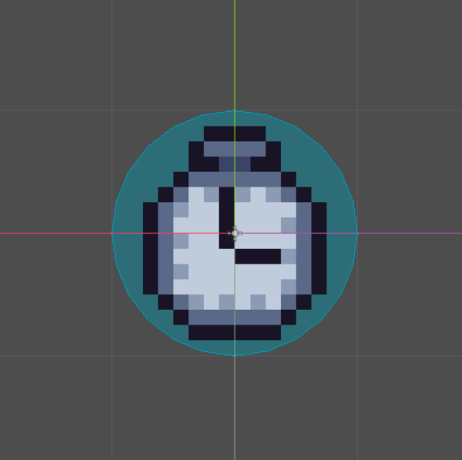
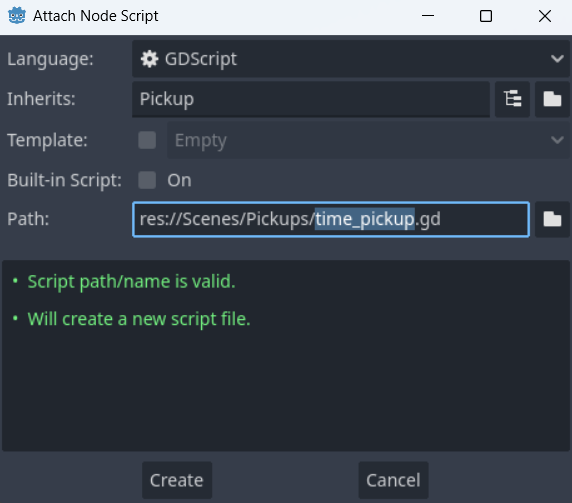
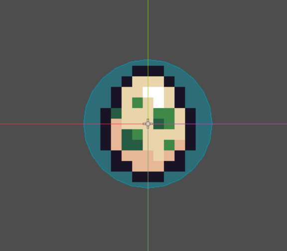
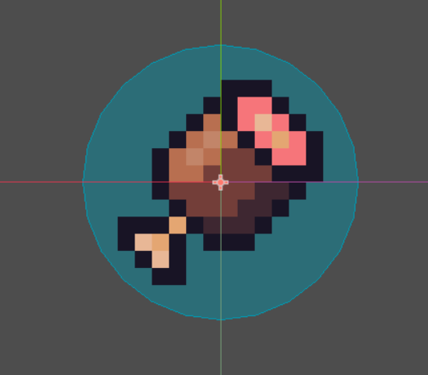

IMPORTANT! This module requires the Collectables module to be completed first!
While we may have some basic pickups, many other modules have the ability to add even more! On this page we will explore some such options and make more interesting pickups. Each of the follwoing sections require other modules. If you do not have that module, you can skip any or all of these collectables without issue.
This section requires the Time Limit module. Go to your file system and right click the Pickup scene. Create a new inherited scene from it, then rename the root node TimePickup. The scene tree should now look like so:
Next select the AnimatedSprite2D node. In the inspector create a new sprite frames and import the timer sprite that can be found in the Advanced Collectables folder in your VGDC-2025 Assets folder.
If you are not taking this course in person, you can download the assets Here
Finally, select the CollisionShape2D node. In the inspector create a new circle collision shape and resize it to fit the sprite.
Next remove the script from the TimePickup node and then attach a new one. Make sure you set it to inherit from the Pickup script.
Now in the new script let's create a new export variable called time_gained and set a default value of 30.0.
@export var time_gained = 30.0Next, let's overwrite the pickup's onPickup function. In it we want to first get the current time left on the LevelTimer, then start the LevelTimer again with the time_gained variable added on, then of course running the pickup's default onPickup function (so we don't need to copy all of it's code.)
func onPickup(area):
var t = LevelTimer.time_left
LevelTimer.start(t + time_gained)
super.onPickup(area)And that is the Time Pickup done!
This section requires the Limited Lives module. Repeat the steps to create the Time Pickup, renaming the root node to LifePickup and using one of the Egg sprites from the Advanced Collectables folder, until you get to the new script.
Once in the new script, we will once again overwrite the onPickup function. In it we will increase the global player_lives variable by 1 before calling the onPickup's default onPickup.
func onPickup(area):
Global.player_lives += 1
super.onPickup(area)This section requires the Health modules. Repeat the steps to create the Time Pickup, renaming the root node to HealthPickup and using meat sprite from the Advanced Collectables folder, until you get to the new script.
Once in the new script, we will once again overwrite the onPickup function. In it we will check if the player has less than maximum health, and if so restore 1 health to the player and then call the default Pickup's onPickup function.
func onPickup(area):
if Global.player.current_health < Global.player.max_health:
Global.player.current_health += 1
super.onPickup(area)Note that the super.onPickup is inside of the if statement block. If it was outside, the player could cause the pickup to disappear without actually healing any!
And that is all the advanced collectables! Congrats! Go ahead and add some to your level and try it out before moving on to another module!